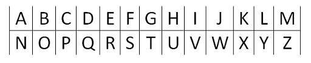
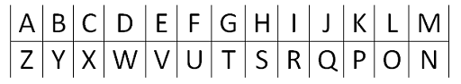
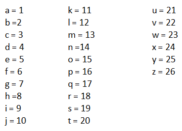
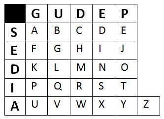
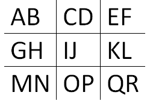
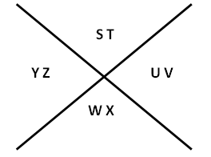
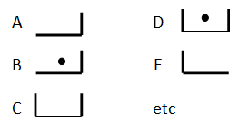
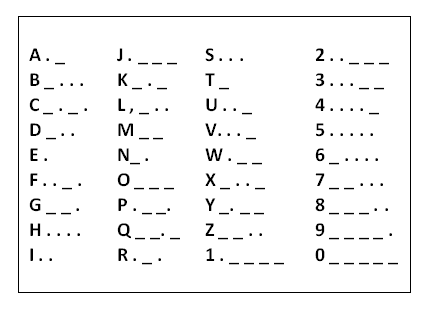
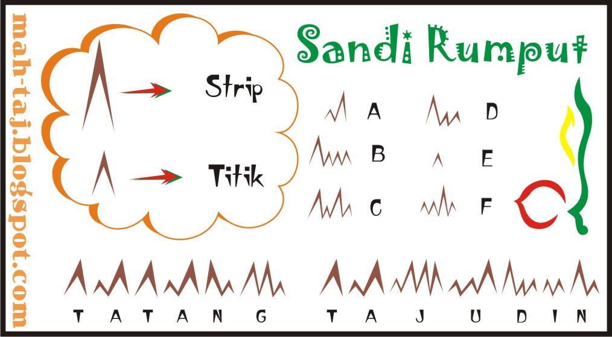
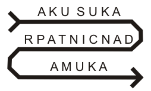

Contoh :
CENZHXN dibaca PRAMUKA
Cara menggunakan sandi ini hanya tinggal menambahkan AND di tiap kata.
Contoh pengunaannya:
ANDA KAND ANDU = AKU

Contoh :
I F W B dibaca RUDY

Contoh :
16 18 1 13 21 11 1
P R A M U K A

Contoh :
(G:I)(D:I)(G:S)(D:D)(G:U)(G:D)(G:S)
P R A M U K A
Cara menggunakan sandi ini hanya dengan pukul 03.00 sebagai acuan A, senlanjutnya setiap 5 menit berubah menjadi huruf berikut nya.
03.00 = A
03.05 = B
03.10 = C
03.15 = D
dan seterusnya.
Contoh penggunaan :
04.15 03.00 03.15 03.00
P A D A


Contoh :

Pemenmu kode/sandi morse bernama samuel FB morse yang berkembangsaan Amerika. Kode morse disampaikan degan menggunakan: peluit, radio, asap, lampu, telegraf, dan arus listrik untuk membedakan titik dan strip digunakan perbandingan 1:3 (1 untuk titik dan 3 untuk strip).
Pada tahun 1837 penggunaanya masih terbatas yang dugunakan dengan sistem telegraf dan baru diterima di seluruh dunia pada tahun 1851.

Contoh sandi morse:
Tanda-tanda baca:
Titik . . . . . .
Koma . _ . _ . _
Titik ganda _ _ _ . . .
Titik koma _ . _ . _ .
Tanda tanya . . _ _ . .
Tanda seru _ . . _ _
Kurung _ . _ _ . _
Apostrophe . _ _ _ _ .
Tanda Mengucap . _ . . _ .
Garis pemisah _. . _ .
Sandi rumput adalah sistem representasi huruf, angka, dan tanda baca yang di buat berdasarkan prinsip kode morse. Berarti kunci utama terletak pada sandi morse. Perbedaan antara keduanya hanya terletak pada cara penulisan, dimana titik dan garis pada kode morse diganti dengan rumput kecil dan rumput besar.
Berikut merupakan contoh gambar :

Yaitu sandi yang kalau ingin membacanya harus dimulai dari belakang, seperti udang berjalan.
Contohnya:
AKUMARP = PRAMUKA
Cara membaca sandi ini tinggal membaca seperti ular berjalab.
